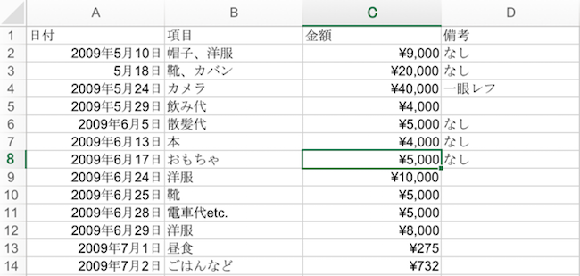

library(magrittr)
library(readr)3 表形式のデータソースからのデータ取得
Rにはデータソースとして一般的な.csvや.txtなどのテキストファイルの入出力を行う関数が標準的に備わっている。また、パッケージを利用することでより多様なデータソース、例えばデータベース、地理空間データや画像、音声ファイルに対応することができる。標準の読み込み関数の機能改善を施したパッケージもある。ここではそうしたデータ読み込みパッケージの中から、データ分析の現場で汎用的なテキストファイルおよび表計算ソフトのエクセルファイルをR上で扱うものについて解説する。
これらのパッケージはいずれもtidyverseに含まれ、読み込みの挙動を制御するオプションが豊富に備わっている。また読み込まれたオブジェクトはデータフレームであるが、追加のクラスとしてtbl\_dfが与えられる。
3.1 テキストファイル
テキストファイルは、特別なソフトを使わずに幅広い環境で利用可能な形式のファイルである。テキストファイルの一種であるカンマ(,)区切りのテキストファイル(.csv)は次のようにデータを格納する。この形式で記録されるデータの特徴は、行ごとにレコードを保持し、各項目をカンマによって区切っていくことだ。
date, value, type
"2017-04-29", 14, b
"2017-04-29", 8, a
"2017-04-30", 21, b
"2017-04-30", 4, c
"2017-04-30", 9, c
...テキストファイルに記録されたデータをRに読み込むためにreadrパッケージを用いよう。readrパッケージはその名から想像される通り、R上でさまざまな種類のデータを読み込むためのパッケージである。多様な形式のファイルに対応できるよう、豊富な関数が用意されているが、読み込み関数はread_*という接頭辞をもつ。*で示した部分には対象のデータ形式が入る。つまりcsvファイルに対してはread_csv()を使うことになる。関数に指定するのは、接尾辞となっている形式のファイルまたは、ファイルの形式に従った文字列である。
# 本書のサンプルデータcsvファイルを読み込む
df_sns <- read_csv(file = "data/sns.csv")Rows: 1000 Columns: 6
── Column specification ────────────────────────────────────────────────────────
Delimiter: ","
chr (5): post_id, address, place_name, user_id, nationality
dttm (1): post_time
ℹ Use `spec()` to retrieve the full column specification for this data.
ℹ Specify the column types or set `show_col_types = FALSE` to quiet this message.このパッケージのファイル読み込み・書き込みの関数は、Rの標準的な関数よりも読み込みが高速である。また、読み込まれたデータはtbl\_dfクラスが与えられ、出力時に各変数のデータ型の表示が行われる。加えて、ファイルに含まれる各変数のデータ型の指定がより的確、柔軟に行える点が特徴である。この特徴について詳しく見ていこう。
3.1.1 readrパッケージで扱えるデータ形式
readrのファイル読み込みでは、コンピュータに保存されているファイルだけでなく、インターネット上のファイルや圧縮ファイルも扱える。この場合、他のファイルの読み込み方法と変わらず、第一引数に対象のファイルがあるパスを指定する。readrで扱うファイルの種類と対応する読み込み関数について表XXに整理した。インターネット上にあるファイルの場合にはコンピュータ内のパスではなくURLを指定することとなる。
ファイルではなく、文字列を直接データとして扱うこともできる。この場合、利用する関数と区切り文字の関係に注意する必要がある。
# カンマ区切りのデータを読み込む場合
# read_csv()を利用する
read_csv('date, value, type\n
"2017-04-29", 14, b\n
"2017-04-29", 8, a\n
"2017-04-30", 21, b\n
"2017-04-30", 4, c\n
"2017-04-30", 9, c')Rows: 5 Columns: 3
── Column specification ────────────────────────────────────────────────────────
Delimiter: ","
chr (1): type
dbl (1): value
date (1): date
ℹ Use `spec()` to retrieve the full column specification for this data.
ℹ Specify the column types or set `show_col_types = FALSE` to quiet this message.# タブ区切りは\tで表現される。
read_tsv("x\ty\n1\t2\n3\t4")Rows: 2 Columns: 2
── Column specification ────────────────────────────────────────────────────────
Delimiter: "\t"
dbl (2): x, y
ℹ Use `spec()` to retrieve the full column specification for this data.
ℹ Specify the column types or set `show_col_types = FALSE` to quiet this message.# 任意の区切り文字を使用している場合には、read_delim()のdelim引数で区切り文字を指定する。
read_delim("x y\n1 2\n3 4", delim = " ")Rows: 2 Columns: 2
── Column specification ────────────────────────────────────────────────────────
Delimiter: " "
dbl (2): x, y
ℹ Use `spec()` to retrieve the full column specification for this data.
ℹ Specify the column types or set `show_col_types = FALSE` to quiet this message.read_delim("x.y\n1.2\n3.4", delim = ".")Rows: 2 Columns: 2
── Column specification ────────────────────────────────────────────────────────
Delimiter: "."
dbl (2): x, y
ℹ Use `spec()` to retrieve the full column specification for this data.
ℹ Specify the column types or set `show_col_types = FALSE` to quiet this message.| 読み込み関数 | ファイル形式 |
|---|---|
read_lines(), read_lines_chunked() |
txt, csvなど |
read_tsv() |
txt |
read_delim(), read_delim_chunked() |
txt |
read_table(), read_table2() |
txt |
read_csv(), read_csv2(), read_csv_chunked() |
csv |
read_fwf() |
txt (固定長) |
read_log() |
log |
read_rds() |
rds |
3.1.2 データ型の判定と列指定読み込み
readrの関数を使ったデータ読み込みが実行されると、コンソール上で対象のデータがもつ変数と、各変数をどのように処理して読み込んだかが出力される。これはreadrがデータに含まれる各列の先頭100行分を読み、推測されたデータ型を自動的に判別し、適したデータ型への変換を行っている結果を示している。
先の例の出力結果を改めて確認しよう。
Parsed with column specification:
cols(
post_id = col_character(),
post_time = col_datetime(format = ""),
address = col_character(),
place_name = col_character(),
user_id = col_character(),
nationality = col_character()
)
cols(...)の中身がデータに対する処理の内容を記述しており、各行が対象データの列に対応する。cols(...)の中で6行分の出力がなされていることは対象データが6列からなることを示している。各行の内容は、変数名 = col_*()という形式になっており、左辺が変数名、右辺が読み込み時に適用されたデータ型の名を冠した関数である。この場合、文字列 (col_character())および日付型 (col_datetime())の2種類のデータ型が適用されている。
Rの標準関数を利用した場合、読み込み後の変数がどのデータ型として扱われているかは利用者が出力を行いながら確認する必要があるが、readrでは読み込み時にデータ型の出力を行う。そのため、例えば日付を示す変数が文字列型として処理されている場合などの非意図的なデータ型の変換トラブルを未然に防ぐことができるだろう。また文字列のデータを因子型として扱わない点も大きな違いとなる。これは標準的に備わっている関数read.csvの実行結果と比較するとよくわかる。
# readrで読み込んだデータは、時間データに対して自動的な変換が行われている
df_sns$post_time[1][1] "2016-04-01 09:37:43 UTC"class(df_sns$post_time[1])[1] "POSIXct" "POSIXt" # 標準の関数では同じpost_id列の値が因子型として扱われてしまっている
df_sns2 <- read.csv("data/sns.csv")
df_sns2$post_time[1][1] "2016-04-01T09:37:43Z"class(df_sns2$post_time[1])[1] "character"パッケージreadrを使ったデータ読み込みではデータ型が自動的に適切に処理される例を示したが、col_types引数に渡す値を変更することで変数のデータ型をユーザが指定した形式で処理させることができる。
col_types引数にはcols()を使って列の処理方法を指定することになる。これは先に見たreadrの読み込み時にコンソールへ出力されるメッセージと同様のものである。すなわち、自動的に読み込みを行う場合と次のデータ型を指定した読み込みでは同じデータの読み込み結果となる。
read_csv("data/sns.csv")
read_csv("data/sns.csv",
# col_types引数にデータ型を指定して読み込む変数名と
# その処理に用いる関数を指定する
col_types = cols(
post_id = col_character(),
post_time = col_datetime(format = ""),
address = col_character(),
place_name = col_character(),
user_id = col_character(),
nationality = col_character()))cols()内でどのようなデータ型で処理するかを定義しなかった列は、readrによって自動的にデータ型が判定される。そのため利用時には特定の列だけをcols()で定義しておくと良いだろう。対して、特定の列を読み込みの対象外にすることもできる。col_skip()はそのための関数である。
col_types引数で指定するcols()内部で定義可能なデータ型として、論理値、数値（整数、実数）、文字列、日時および時間型などがあり、これらは表XXに示すような対応関係にある。また、各データ型の省略表記も用意されており、これを関数の代わりに文字列として指定することもできる。
| データ型 | 関数 | 省略時の表記 |
|---|---|---|
| 論理値型 | col_logical() |
l |
| 数値型(数字と.以外は無視する) | col_number() |
n |
| 整数型 | col_integer() |
i |
| 実数型 | col_double() |
d |
| 文字列型 | col_character() |
c |
| 日付型 (Y-m-d表記) | col_date(format) |
D |
| 日時型 (ISO8601形式) | col_datetime(format, tz) |
T |
| 時間型 | col_time(format) |
なし |
| 因子型 | col_factor(levels, ordered) |
なし |
| 読み込み対象としない | col_skip() |
_, - |
cols()は関数であるので、読み込みを実行するread_*()とは独立してオブジェクト化しておくと、同様の構造を持ったデータに対して使いまわせる。次の例は、あらかじめ各列をどのようなデータ型として扱うかを定義しておくもので、一部の変数については_によって読み込みから除外している。
data_vars <-
cols(post_id = "_",
post_time = "c",
user_id = "c",
address = "_",
place_name = "_")
read_csv("data/sns.csv",
# 指定を省略した変数は自動的に判定されたデータ型が適用される
col_types = data_vars)# A tibble: 1,000 × 3
post_time user_id nationality
<chr> <chr> <chr>
1 2016-04-01T09:37:43Z A-8vImElYu US
2 2016-04-01T20:54:12Z A-zpNoCiF2 TH
3 2016-04-01T22:01:57Z C-hbtHidIz HK
4 2016-04-01T22:13:21Z B-QUU841zl ID
5 2016-04-02T08:18:09Z B-JzaPVHpY US
6 2016-04-02T11:16:27Z A-G6sGnoFV AU
7 2016-04-02T20:06:11Z C-NxooWvcI SG
8 2016-04-02T22:47:24Z C-xeQ41RtH CN
9 2016-04-03T00:26:41Z B-FkHjECs0 HK
10 2016-04-03T01:36:18Z C-Bd0DCcdp TH
# … with 990 more rowsまた、特定の列だけを読み込むcols_only()も提供されている。扱う列が多いデータの場合にはcols()ではなくこちらの関数を利用すると良い。
3.1.3 ロケール
ロケールとは多種多様な言語や単位、時間といった表記などの総称であり、国や地域、利用環境によって異なるロケールが設けられている。例えば、日付の要素である曜日や月は国家によって表現が異なることが多い。また日本では時間を表現するために「12時30分」のような表記が行われるが、国際的に一般的なのは「12:30」といった形式だろう。しかし「12時30分」も「12:30」も同じものを表現している。
日本語文字列を保存したファイルで生じる文字化けもロケールに関する問題である。これは実行環境のオペレーションシステム (OS)によってデフォルトの文字エンコードが異なっているために生じる。Windows環境では、多くの場合、Microsoft社によって定義された”CP932”と呼ばれる日本語用のエンコードが与えられる。その他、日本語を取り扱うためにR内で利用可能で整備されているエンコード形式として、“EUC-JP”、“SJIS”、“SHIFT_JIS”、“UTF8”などがある。
次の例は、Windows環境で作成されたcsvファイルをMacやUbuntuといったUNIX環境で開いた場合に表示されるエラーメッセージである。
read_csv("data/housekeeping_cp932.csv")
# Error in make.names(x) : invalid multibyte string at '<93><fa><95>t'Rでは、ファイル読み込み関数の実行時にファイルに対するエンコードを指定して文字化けを回避できる。readrにおいては locale引数でlocale()という関数を実行する。locale()は、ロケールに関する設定を定義する関数であり、その中にエンコードを指定するencoding引数が用意されている。すなわち、先のファイルを適切に読み込むには次のコードを実行する必要がある。
# readrパッケージではlocale引数でエンコードを指定したlocale()実行する
read_csv("data/housekeeping_cp932.csv",
locale = locale(encoding = "cp932"))ロケールの指定は文字列のエンコードだけでなく、日付・時間に関しても指定が可能である。次の例は、同一のファイルに対して時間のロケールを変更した処理である。
read_csv("data/sns.csv",
locale = locale(tz = "UTC"),
col_types = cols_only(post_time = "T"))# A tibble: 1,000 × 1
post_time
<dttm>
1 2016-04-01 09:37:43
2 2016-04-01 20:54:12
3 2016-04-01 22:01:57
4 2016-04-01 22:13:21
5 2016-04-02 08:18:09
6 2016-04-02 11:16:27
7 2016-04-02 20:06:11
8 2016-04-02 22:47:24
9 2016-04-03 00:26:41
10 2016-04-03 01:36:18
# … with 990 more rowsread_csv("data/sns.csv",
locale = locale(tz = "Asia/Tokyo"),
col_types = cols_only(post_time = "T"))# A tibble: 1,000 × 1
post_time
<dttm>
1 2016-04-01 18:37:43
2 2016-04-02 05:54:12
3 2016-04-02 07:01:57
4 2016-04-02 07:13:21
5 2016-04-02 17:18:09
6 2016-04-02 20:16:27
7 2016-04-03 05:06:11
8 2016-04-03 07:47:24
9 2016-04-03 09:26:41
10 2016-04-03 10:36:18
# … with 990 more rowsread_csv("data/sns.csv",
locale = locale(tz = "US/Arizona"),
col_types = cols_only(post_time = "T"))# A tibble: 1,000 × 1
post_time
<dttm>
1 2016-04-01 02:37:43
2 2016-04-01 13:54:12
3 2016-04-01 15:01:57
4 2016-04-01 15:13:21
5 2016-04-02 01:18:09
6 2016-04-02 04:16:27
7 2016-04-02 13:06:11
8 2016-04-02 15:47:24
9 2016-04-02 17:26:41
10 2016-04-02 18:36:18
# … with 990 more rowslocale()で設定可能なロケールについて、表XXにまとめた。またlocale()を引数なしで実行すると現在の実行環境でのロケール設定が出力される。これらのロケール設定は、ファイル読み込み時のエンコード以外に、日付・時間データや文字列データを扱う場合に有効となる。これらの話題については本書の該当する章で議論する。
- date_names
- 日付に関するロケールを言語レベルで指定
- date_format
- 日付に関するロケールのフォーマット
- decimal_mark
- 小数点を区切るための記号を指定
- tz
-
タイムゾーンの指定。Rで利用可能な時間帯の名称は
OlsonNames()で確認できる - encoding
- 文字列のエンコード形式
# 現在のロケール設定を出力
locale()<locale>
Numbers: 123,456.78
Formats: %AD / %AT
Timezone: UTC
Encoding: UTF-8
<date_names>
Days: Sunday (Sun), Monday (Mon), Tuesday (Tue), Wednesday (Wed), Thursday
(Thu), Friday (Fri), Saturday (Sat)
Months: January (Jan), February (Feb), March (Mar), April (Apr), May (May),
June (Jun), July (Jul), August (Aug), September (Sep), October
(Oct), November (Nov), December (Dec)
AM/PM: AM/PM# 日本で利用される曜日、月、時間に関する設定を表示
locale(date_names = "ja")<locale>
Numbers: 123,456.78
Formats: %AD / %AT
Timezone: UTC
Encoding: UTF-8
<date_names>
Days: 日曜日 (日), 月曜日 (月), 火曜日 (火), 水曜日 (水), 木曜日 (木), 金曜日
(金), 土曜日 (土)
Months: 1月, 2月, 3月, 4月, 5月, 6月, 7月, 8月, 9月, 10月, 11月, 12月
AM/PM: 午前/午後# 日本で一般的な「年月日」の形式を日付として扱う
parse_guess("2017年6月23日",
locale = locale(date_format = "%Y年%m月%d日")) %>%
class()[1] "Date"3.2 エクセルファイル
表計算アプリケーションで用いられるバイナリファイルもまた、頻繁に利用されるデータ形式である。Rでもファイル形式が.xlsおよび.xlsxからなるエクセルファイルを読み書きするパッケージが多く開発されている。これらのパッケージは表XXに示すように特徴が異なる。
| パッケージ | 読み込み | 書き込み | シート名の取得 | 特徴 |
|---|---|---|---|---|
| readx | reax_excel() |
- | excel_sheets() |
読み込みのみ。列のデータ型を細かく指定できる |
| XLConnect | loadWorkbook(), readWorksheetFromFile() |
writeWorksheet() |
getTables() |
ファイルをデータベースのように読み書きすることができ、さらにはセルのスタイルなどの調整も可能。ただし、別途Javaがインストールされている必要がある |
| gdata | read.xls() |
(write.fwf()) |
sheetNames() |
読み込みだけが可能。Rでのデータ操作に関わる豊富な機能を備えた関数がある |
| openxlsx | read.xlsx() |
write.xlsx() |
sheets() |
Javaがインストールされていない環境でも利用可能 |
| xlsx | read.xlsx(), read.xlsx2() |
write.xlsx() |
- | セルの編集や加工ができる |
| repmis | source_XlsxData() |
- | - | URLを指定してファイルを読み込みことが可能 |
| rio | readxl::read_excel(), openxlsx::read.xlsx() |
openxlsx::write.xlsx() |
- | 上記パッケージに実装された各関数へのラッパーとなっている |
本書では、このうちreadxlパッケージを紹介する。このパッケージは C++で実装されたエクセルファイルの読み込み ライブラリを導入しており、Javaがインストールされていない環境でも動作する。ただしエクセル形式での保存には対応していないため、エクセルファイルとして書き込みを実行するには、別途writexlパッケージを利用することになる。
library(readxl)readxlでメインとなる関数は2つある。.xls、.xlsxファイルをデータフレームとして読み込むread_excel()と、シート名を取得するexcel_sheets()である。read_excel()はファイル形式を自動的に判別した読み込みを行う。一方でエクセルファイルの個々の形式に対応した関数、read_xls()(こちらはxls)、read_xlsx()(xlsx形式のファイルに対応)も用意されている。また、後述のようにread_excel()では読み込み対象のエクセルファイル内のシートを指定する必要があるため、適宜excel_sheets()を実行してファイル中に含まれるシートの一覧を確認することで、ファイルを開いて確認するという手間を省くことができる。read_excel()には読み込み時のオプションが豊富に用意されている。これらはエクセルファイルで特徴的なシートやセルに適用できるものが多い。以下にread_excel()の主要な引数をまとめるが、col_types引数はreadr::read_*のものとは挙動が異なるので注意が必要である。
- path
- xls、xlsx形式ファイル(およびそのパス)を与える。
- sheet
- 読み込み対象のシート名または番号を指定する。初期値として最初のシートが読み込まれる。
- range
-
読み込み時の範囲指定を行うオプション。
B3:D66のようにエクセルでのセルの選択形式が可能。 - col_names
- 初期値ではシートの第一行を変数名として扱うが、同じ長さのベクトルから変数名を定義することができる。
- col_types
- R上での各変数のデータ型を指定する。初期値では自動的に推定されたデータ型が適用される (全ての変数に対してguessが適用される)。論理型 logical、数値 numeric、日付 date、文字列 textと、読み込みから除外する skip。一つの変数に複数のデータ型が含まれる場合、listとして読み込むのが適切である。
- na
- 読み込み時に欠損値として処理する値。エクセルファイル上では欠損に空白を用いることが多いため、初期値で空白が指定されている。
- skip, n_max
- 読み込みの行数を制御するオプション。skip引数で指定した行数が除外され、n_maxで読み込み対象にする行数を指定する。
3.2.1 シート指定の読み込み
# 対象のエクセルファイルのシート一覧を取得
excel_sheets("data/housekeeping.xlsx")[1] "Sheet1" "7月" エクセルファイルの読み込みを実行するread_excel()の基本的な使い方は、他のファイル読み込み関数と変わらず、読み込みの対象とするファイル名を第一引数に指定する。しかしエクセルファイルにはシートと呼ばれる機能があり、いわば一つのファイル中で複数のデータを格納することができるため、読み込み対象のシートについてもsheet引数で指定する必要がある。これを指定しない場合、read_excel()は一番目のシートを読み込む。
read_excel("data/housekeeping.xlsx",
sheet = 1)# A tibble: 35 × 4
日付 項目 金額 備考
<dttm> <chr> <dbl> <chr>
1 2009-05-10 00:00:00 帽子、洋服 9000 なし
2 2009-05-18 00:00:00 靴、カバン 20000 なし
3 2009-05-24 00:00:00 カメラ 40000 一眼レフ
4 2009-05-29 00:00:00 飲み代 4000 <NA>
5 2009-06-05 00:00:00 散髪代 5000 なし
6 2009-06-13 00:00:00 本 4000 なし
7 2009-06-17 00:00:00 おもちゃ 5000 なし
8 2009-06-24 00:00:00 洋服 10000 <NA>
9 2009-06-25 00:00:00 靴 5000 <NA>
10 2009-06-28 00:00:00 電車代etc. 5000 <NA>
# … with 25 more rowssheet引数では、添字でシート番号を与えても良いし文字列でシート名を指定しても良い。この時、あらかじめexcel_sheets()でシート名をRオブジェクトとして取得し、それを利用することもできる。
sheets <- excel_sheets("data/housekeeping.xlsx")
read_excel("data/housekeeping.xlsx",
# 2番目のシートを読み込む
sheet = sheets[2])3.2.2 列指定の読み込み
データ型や列の除外により各列の読み込みの挙動を制御するcol_typesは、既定値ではNULLが与えられる。各列にはreadxlが自動的に判断したデータ型が与えられるが、ユーザが個別にデータ型を指定することもできる。col_types引数に指定可能な値は、論理型 logical、数値 numeric、日付 date、文字列 text、リスト listおよび、自動推定を実行する guessと読み込みから除外する skipがある。各列のデータ型を自動処理した時と個別に指定した時の挙動をそれぞれ見てみよう。
read_excel("data/housekeeping.xlsx") %>% str()tibble [35 × 4] (S3: tbl_df/tbl/data.frame)
$ 日付: POSIXct[1:35], format: "2009-05-10" "2009-05-18" ...
$ 項目: chr [1:35] "帽子、洋服" "靴、カバン" "カメラ" "飲み代" ...
$ 金額: num [1:35] 9000 20000 40000 4000 5000 4000 5000 10000 5000 5000 ...
$ 備考: chr [1:35] "なし" "なし" "一眼レフ" NA ...read_excel("data/housekeeping.xlsx",
# 各列のデータ型はベクトルで定義する
# 無視する、文字列、文字列、文字列の順で列に含まれるデータ型を指定する
col_types = c("skip", "text","text", "text")) %>% str()tibble [35 × 3] (S3: tbl_df/tbl/data.frame)
$ 項目: chr [1:35] "帽子、洋服" "靴、カバン" "カメラ" "飲み代" ...
$ 金額: chr [1:35] "9000" "20000" "40000" "4000" ...
$ 備考: chr [1:35] "なし" "なし" "一眼レフ" NA ...初めの例では”日付”列の値が日付を表すPOSIXctクラスとなっていることがわかる。他の列の値も R における適切なデータ型に変換されている。列のデータ型を指定した二番目の例では、col_types引数に与えた1番目の要素が skip となっており、読み込みから除外されている。また、他の列は全て text が与えられており、読み込み結果を見ると”日付”列は除外されており、他の列は文字列として処理されている。
3.2.3 範囲を指定して読み込む
次はデータの範囲指定を行った読み込みを行ってみよう。これにはrange引数を利用する。エクセルでのデータ入力の最小単位はセルであるが、セルには”A2”のような座標が与えられている。エクセルではA列からB列までの1から4行までのセルを読み込むには”A1:B4”とするが、rangeではエクセルでのセル指定と同じ方法が利用できる。

read_excel("data/housekeeping.xlsx",
range = "A1:B4")# A tibble: 3 × 2
日付 項目
<dttm> <chr>
1 2009-05-10 00:00:00 帽子、洋服
2 2009-05-18 00:00:00 靴、カバン
3 2009-05-24 00:00:00 カメラ range引数の中では、セルの指定を補助するcell_cols()、cell_rows()といった関数が利用できる。また、より複雑な指定をするにはアンカー機能を実装したanchored()やcell_limits()を利用すると良い。こうした補助関数はcellrangerパッケージにより実装されている。
例えば特定の列を選択するにはcell_cols()を利用して次のようにする。
# 2列目 (セルB) を読み込む
# 2つの例は同じ結果となる
read_excel("data/housekeeping.xlsx",
range = cell_cols(2))
read_excel("data/housekeeping.xlsx",
range = cell_cols("B"))アンカー機能を利用し、B4セルを起点として2行3列分のデータを読み込む処理では、dim引数により範囲となる行と列の数を調整する。
read_excel("data/housekeeping.xlsx",
range = anchored("B4", dim = c(2, 3)),
col_names = FALSE)New names:
• `` -> `...1`
• `` -> `...2`
• `` -> `...3`# A tibble: 2 × 3
...1 ...2 ...3
<chr> <dbl> <chr>
1 カメラ 40000 一眼レフ
2 飲み代 4000 <NA> 読み込みの範囲を制御するオプションとして他に、skip、n_max引数が用意されている。これらはそれぞれ読み飛ばす先頭行の行数と読み込む行数を調整するものである。skipを用いる場合は次に示すように、読み飛ばした次の行が列名として与えられることになるので、col_namesでFALSEを指定するかcol_namesで列名を与えると良い。
# 先頭に列名を指定した行がある場合、skipで読み飛ばされてしまう
read_excel("data/housekeeping.xlsx",
skip = 2) %>% names()[1] "39951" "靴、カバン" "20000" "なし" # col_names = FALSEとした時には列名はreadxlにより自動的に与えられる
read_excel("data/housekeeping.xlsx",
skip = 2,
col_names = FALSE) %>% names()New names:
• `` -> `...1`
• `` -> `...2`
• `` -> `...3`
• `` -> `...4`[1] "...1" "...2" "...3" "...4"# col_namesで列名を与える
read_excel("data/housekeeping.xlsx",
col_names = c("日付", "項目", "金額", "備考"),
skip = 2) %>% names()[1] "日付" "項目" "金額" "備考"3.2.4 特定の値を欠損とする
エクセル上で欠損は、空白セルによって表現されることが多いため、readxlでは空白セルを欠損値として処理する。一方で、セルに対して明示的に欠損を示す文字列や値が与えられていることもあるだろう。例えば、これまで例として用いている「家計簿」データでは備考列で空白と「なし」と記述されたセルが混在している。読み込み後に「なし」を欠損として処理することも可能であるが、ここではna引数を用いて「なし」を欠損値として処理してみよう。naは任意の文字列を欠損値扱いにするためのオプションである。
# 備考列の1, 2行目が「なし」となっている
read_excel("data/housekeeping.xlsx") %>% head(3)# A tibble: 3 × 4
日付 項目 金額 備考
<dttm> <chr> <dbl> <chr>
1 2009-05-10 00:00:00 帽子、洋服 9000 なし
2 2009-05-18 00:00:00 靴、カバン 20000 なし
3 2009-05-24 00:00:00 カメラ 40000 一眼レフ# na引数で欠損値として処理する文字列を指定
read_excel("data/housekeeping.xlsx",
na = "なし") %>% head(3)# A tibble: 3 × 4
日付 項目 金額 備考
<dttm> <chr> <dbl> <chr>
1 2009-05-10 00:00:00 帽子、洋服 9000 <NA>
2 2009-05-18 00:00:00 靴、カバン 20000 <NA>
3 2009-05-24 00:00:00 カメラ 40000 一眼レフ3.3 まとめ
- Rで取り扱うことができるファイルの形式は多様であるが、本章では中でも利用頻度の高いテキストファイル、エクセルファイルを取り扱う2つのパッケージ、readr、readxlを紹介した。
- readrはR標準のテキストファイル入出力を実行する関数よりも高速である。またreadrを使ったデータ読み込みは、各変数のデータ型が自動的に判定され、文字列の因子型への自動変換を行わないなどの特徴を備えている。また読み込まれたデータには、データフレームクラスの拡張である
tbl\_dfクラスが与えられる。 - エクセルファイルの読み込みとしてreadxlを導入することで、エクセルのシートや柔軟なセル範囲の指定を行った読み込みが可能となる。readxlには保存用の関数が用意されていないため、エクセルファイルへの出力はwritexlなどのパッケージを使うことになる。